Part 1.1 · Convolution Implementations
Our four loop approach iterates thru each combination between image and kernel pixels, while our two loop approach iterates thru image pixel and convolves using patches.
Convolution (using four loops)
def convolve_four(image, kernel):
kr, kc = kernel.shape
padding_config = ((kr//2, (kr-1)//2), (kc//2, (kc-1)//2))
padded_image = np.pad(image, pad_width=padding_config, mode='constant', constant_values=0)
result_image = np.zeros_like(image, dtype=np.float64)
kernel = np.flip(kernel)
for i in range(len(image)):
for j in range(len(image[0])):
for m in range(kr):
for n in range(kc):
result_image[i][j] += kernel[m][n] * padded_image[i+m][j+n]
return result_imageConvolution (using patches)
def convolve_two(image, kernel):
kr, kc = kernel.shape
padding_config = ((kr//2, (kr-1)//2), (kc//2, (kc-1)//2))
padded_image = np.pad(image, pad_width=padding_config, mode='constant', constant_values=0)
result_image = np.zeros_like(image, dtype=np.float64)
kernel = np.flip(kernel)
for i in range(len(image)):
for j in range(len(image[0])):
patch = padded_image[i:i+kr, j:j+kc]
result_image[i][j] = np.sum(np.multiply(patch, kernel))
return result_imageWe pad both sides with about half the kernel size on each side. For even-sized kernels we'll have an extra pixel, so to generalize a kernel will yield padding of k//2 on the top and (k-1)//2 on the bottom. As a sanity test I ran our convolution against scipy using various filters (Dx, Dy, and random 3x3 and 4x4 kernels) and they matched pixel-by-pixel.
Runtime & Boundaries
The four-loop is slowest by far because it brute forces through each combination of image and kernel pixels. The two-loop is faster because it iterates thru each pixel. Scipy happens to be fastest, probably because it's compiled in C.
| Image | Kernel | four-loop | two-loop | scipy | four / scipy | two / scipy |
|---|---|---|---|---|---|---|
| 64×64 | 3×3 | 0.016s | 0.009s | 0.0001s | 133× | 73× |
| 64×64 | 9×9 | 0.127s | 0.009s | 0.0005s | 270× | 19× |
| 128×128 | 3×3 | 0.061s | 0.034s | 0.0004s | 157× | 89× |
| 128×128 | 9×9 | 0.501s | 0.036s | 0.0015s | 324× | 23× |
| 256×256 | 3×3 | 0.238s | 0.137s | 0.0015s | 161× | 92× |
| 256×256 | 9×9 | 2.033s | 0.142s | 0.0062s | 330× | 23× |
Regarding boundaries, I padded with zeros as previously described. The tradeoff is that border pixels "fade out" after a few convolutions, but thankfully it's not noticeable for my test selfie.
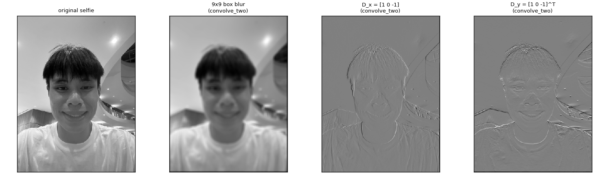
Part 1.2 · Finite difference operator
Here we convolve the cameraman with derivative filters Dx and
Dy. We also calculate the gradient magnitude by taking the convolved images
and taking the square root of the sum of the squares. Thresholding that gives a binary edge map.
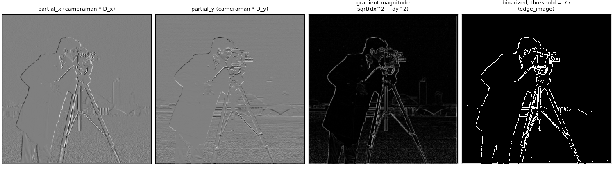
I started with a threshold of 125 but it was a bit dim and missed edges like the bottom of the camera legs. I found that a threshold of 75 captured the lines pretty cleanly, and if we brought it down further we'd start to see lots of noise especially from the grass and the background.
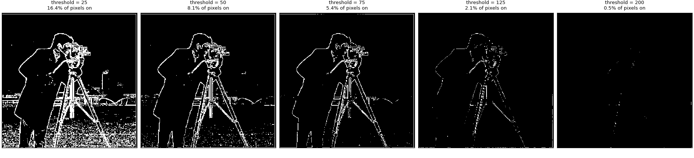
Part 1.3 · DoG filters
The derivative filters from the previous part catch high frequencies which include noise, so we can smooth the image first to remove the noise. But it's also an option to use a DoG filter, which combines the blurring and the differentiation together. Here's what the DoG filters look like:
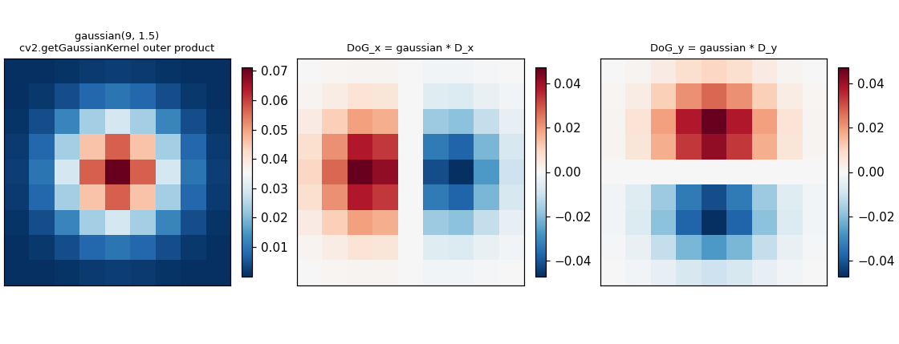
Because convolution is associative, (I * G) * Dx (conolving the image twice) and
I * (G * Dx) (convolving the image with a DoG filter) are the same operation. I did both and took the difference between
the two gradient magnitudes to confirm it was basically zero (specifically 1e-13).
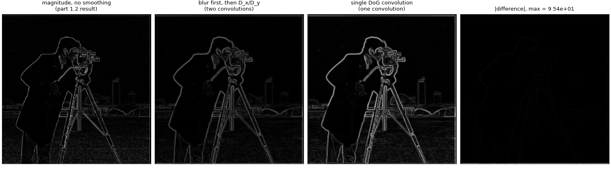
Smoothing makes the edges a bit thicker but the noise from the grass is reduced without missing edges due to a loose threshold! Notably, we had to lower the threshold a bit since the blurring naturally lowers the frequencies of the image.
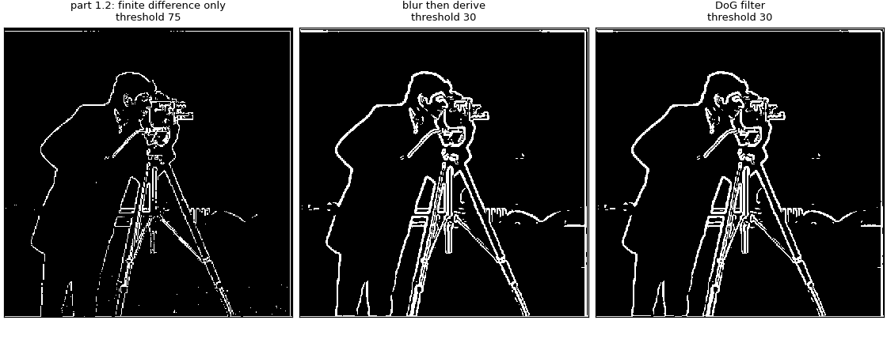
Part 2.1 · Image sharpening
How sharpening works is that we make high-frequency details more prominent by using a Gaussian filter
to blur away high-frequency details, and (mostly) keep low-frequency details, then actually subtracting what we get such That
the high-frequency details remain. This is what we call unsharp masking, and we can mathematically express it as
sharp = image + alpha * (image - blur) according to what we learned in class. Here's my implementation:
def unsharp_mask(image, alpha, ksize=9, sigma=2.0):
return convolve(image, (1 + alpha) * impulse(ksize) - alpha * gaussian(ksize, sigma))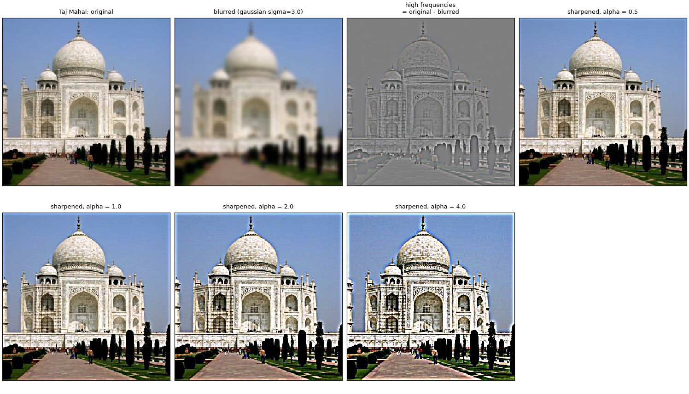
Raising subtracts even more of the low-frequency details, amplifying the contrast at edges. With double alpha edges of this grass photo become super crisp and it almost looks pixelated; By quadrupling it the edges look almost like they are dug into the image. We also see a lot of contrast.
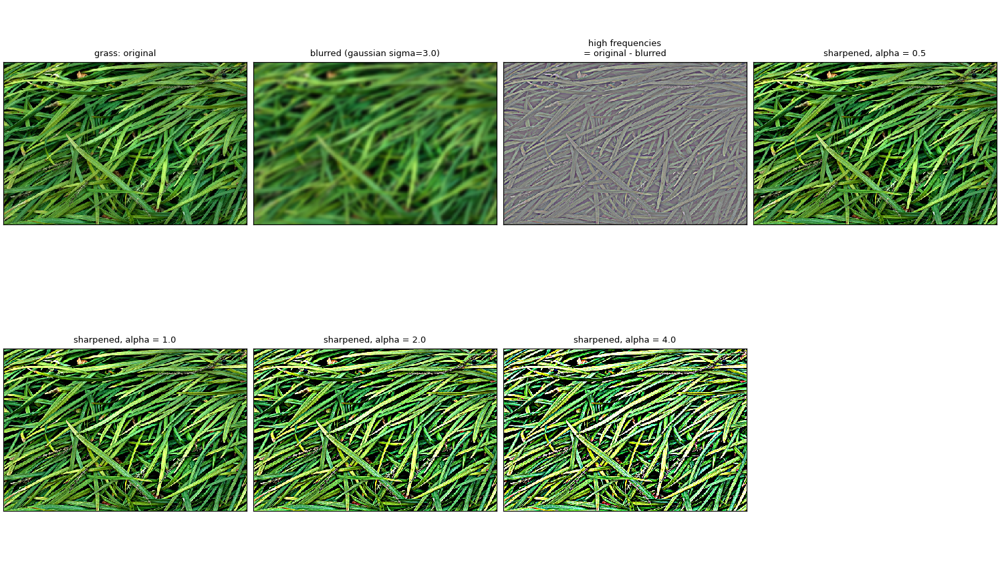
Part 2.2 · Hybrid images
Up close we mostly see an image's high frequencies, and from far away only the low frequencies are left. So if we low-pass one image, high-pass another, and add them, the image we see depends on how far we stand. To line up the features I used the provided alignment code and clicked both eyes in each image.
Derek + Nutmeg: full process
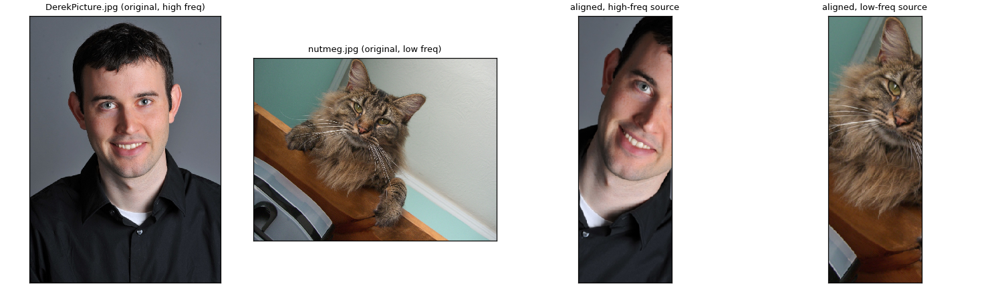
Nutmeg's photo is tilted, so Derek gets rotated to match. That leaves black padding around the edges, which I cropped off, so the aligned images end up narrow.
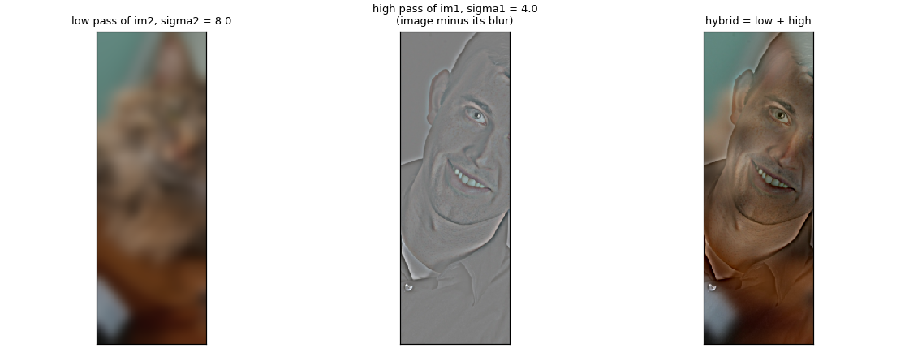
Nutmeg gets the Gaussian low-pass, and Derek gets the high-pass, which is Derek minus his own blur. Adding the two gives the hybrid.
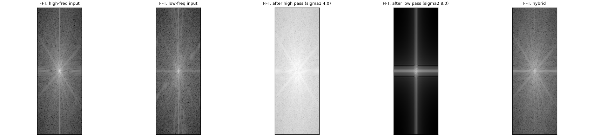
In the Fourier transforms the low-pass keeps only the bright center (the low frequencies), while the high-pass removes the center and keeps the outer part. The hybrid has both.
Cutoff frequency
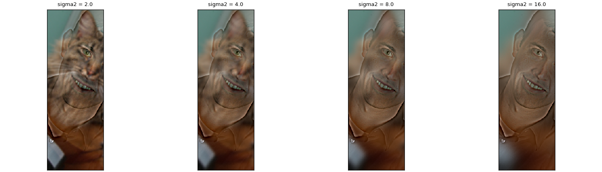
I kept the high-pass sigma on Derek at 4 and tried low-pass sigmas of 2, 4, 8, and 16 on Nutmeg. I went with 4 and 8 for all three hybrids: 8 blurs the low-frequency image enough that its own edges don't compete with the high-frequency one, while its overall shape is still there.
Two more hybrids
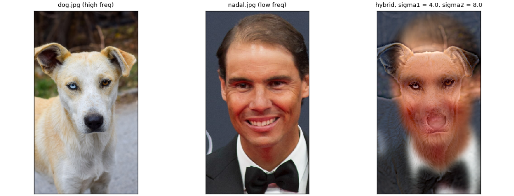
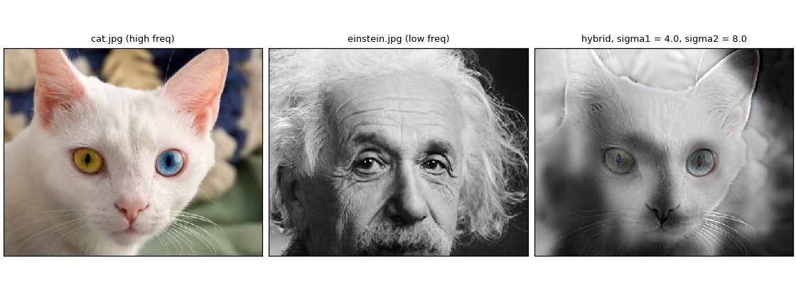
The dog and the cat supply the high frequencies (fur, whiskers, eyes), and Nadal and Einstein supply the low frequencies (the overall shape of the face).
Part 2.3 · Gaussian and Laplacian stacks
Each Gaussian level blurs the level before it, with its sigma value doubling each time. Each Laplacian level is the difference between two neighboring Gaussian levels, i.e. a frequency band. The last Gaussian level is kept as the residual.
Here are the Gaussian and Laplacian stacks for the apple and orange:
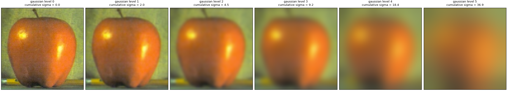
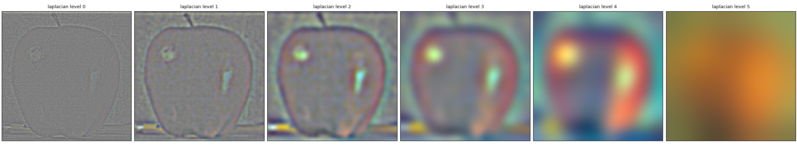
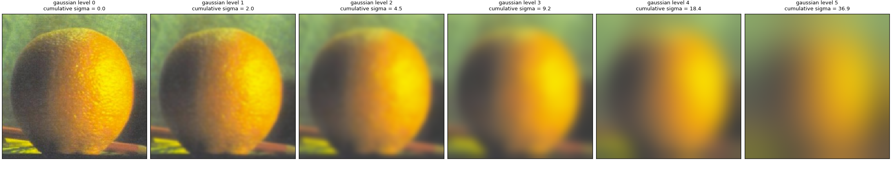
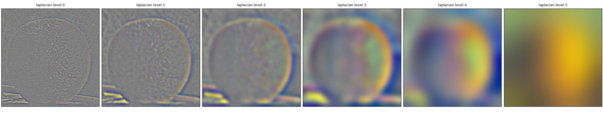
At first I used zero padding for these blurs, and at the coarsest levels the kernel is almost as wide as the image, so dark borders crept in from every side. Switching these blurs to mirror padding fixed it.
Part 2.4 · Multiresolution blending
We also give the blending mask a Gaussian stack. To recreate the Oraple, at each level we mix the two images' Laplacian levels using that level of the mask, then sum the results. First, here's the Gaussian stack for the mask:
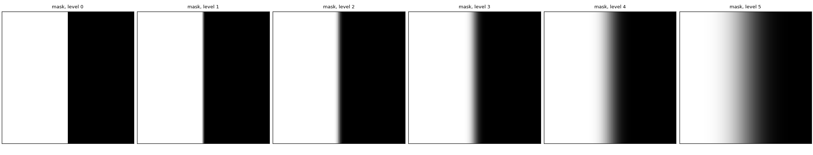
Now, applying the mask at each level and summing the results:
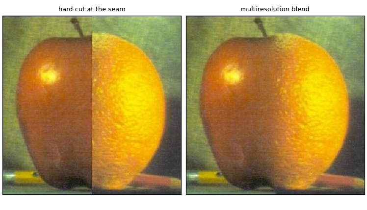
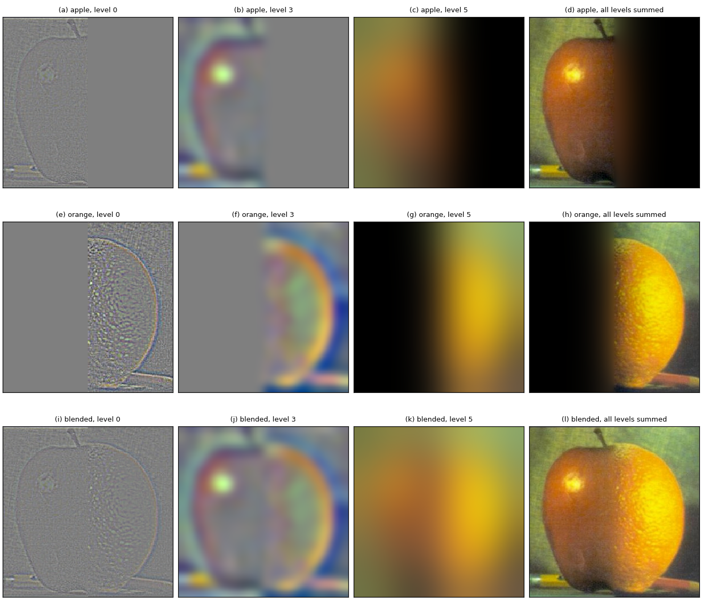
Here's a sample of our Laplacians. The first three columns are Laplacian levels 0, 3, and 5, then all levels summed. We've recreated the Oraple!
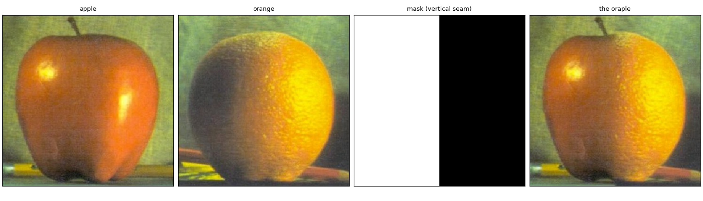
Custom blends
The first one is two landscapes with a vertical seam.
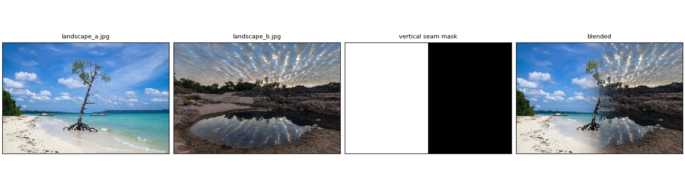
The second one uses a circle, to drop a moon into a night skyline. I cropped the mask to the shape of the moon, scaled it down and repositioned it, then placed it on a black canvas the size of the skyline.
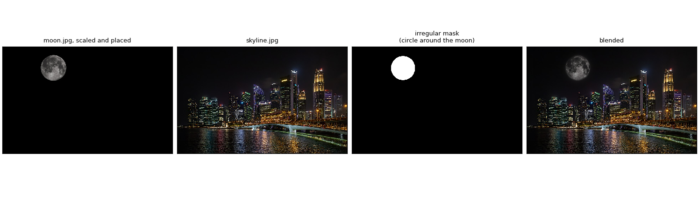
Here is the Laplacian stack for that blend, with the final image on the end!
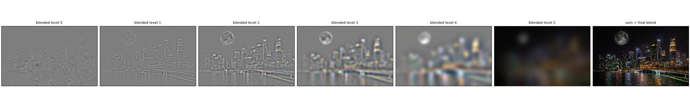
Wrap-up
The most important things I learned from this project was how to break an image down into its Gaussian and Laplacian stacks! I'd worked a lot with Photoshop as a kid and seen things like layers and masks but never really understood that they're the same thing used to blend images together across different frequencies. I also think it was super interesting learning how an unsharp mask and DoG filter work because I'd seen them used in Photosohp but never learned the mathematical properties behind them. Super fun project!